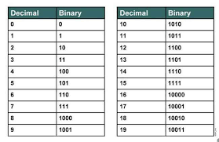

 Het binair stelsel wordt gebruikt om informatie op te slaan op computers. Normaal gebruiken we een decimaal stelsel met waar de getallen 0 t/m 9 in voorkomen. In een binair stelsel zitten alleen de getallen 0 en 1. Als je bijvoorbeeld het getal één wilt hebben, dan is dat 1. Twee is 10, drie is 11, vier is 100, vijf is 101, zes is 110, zeven is 111, enz.